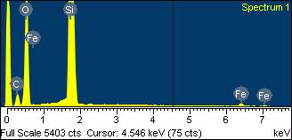
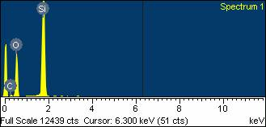
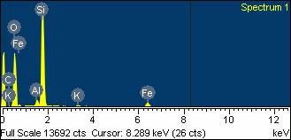
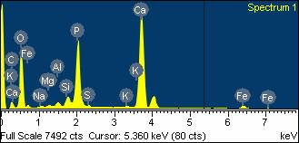

Chris Stringer répond à Jack Cuozzo
Chris Stringer est un chercheur de mérite sur les hominidés au sein du département de Paléontologie du Musée d'Histoire Naturelle de Londres.Jack Cuozzo est l'auteur de Buried Alive : la vérité saisissante sur l'homme de Néandertal.
Voir également :
Le créationniste Jack Cuozzo, lors d'un débat avec l'anthropologue Alan Mann en avril, a affirmé avoir découvert deux nouveaux fossiles humains au site du fossile de l'Homme de Swanscombe en Angleterre. Les fossiles prétendus ont été transmis au Dr Chris Stringer du Musée d'histoire naturelle de Londres pour examen, qui a rédigé cette réponse.
Dr Cuozzo et Swanscombe
In April 2001 I became aware, through third parties, that the creationist Dr J. Cuozzo (author of the book "Buried Alive") was claiming to have discovered two additional fossil human bones at Swanscombe. I eventually managed to track down the two "bones" at The British Museum in Bloomsbury, where they had been forwarded by the British Embassy in Washington, and they were sent here. On inspection it was evident that these specimens had neither the texture nor appearance of genuine fossil bone from Swanscombe, and instead closely resembled chert and flint components in the gravels. However, the "mastoid" did also resemble the genuine article in shape.Pour approfondir cette enquête, le 7 juin 2001, ils ont été soumis à une spectrométrie par rayons X à dispersion d'énergie (EDX) non destructive au département de minéralogie, en comparaison avec du gravier et des ossements fossiles authentiques de Swanscombe. L'échantillon 1 est revendiqué par Cuozzo comme étant un processus mastoïdien gauche du crâne de Swanscombe, et l'échantillon 2 est supposé être l'os pubien du squelette. Pour comparaison, l'échantillon 3 est un morceau de gravier siliceux des Graviers du Milieu à Swanscombe, qui contenait le crâne humain, et l'échantillon 4 est une phalange de Bison des Graviers du Milieu. Malheureusement, les ossements humains fossiles réels de Swanscombe étaient trop grands pour entrer dans la chambre d'analyse EDX, mais leur état de conservation est cohérent avec les autres fossiles de Swanscombe et également différent des spécimens du Dr Cuozzo. Les résultats représentatifs des analyses sont joints sous forme de fichiers jpeg. Comme on peut le voir, les découvertes du Dr Cuozzo affichent les spectres caractéristiques des roches siliceuses (notez les pics de Silicium et d'Oxygène), et n'affichent pas les pics de Calcium et de Phosphore présents dans les ossements fossiles authentiques de Swanscombe.
| Résultats du test de spectrométrie de rayons X à dispersion d'énergie | |
|---|---|
| Échantillon 1 : prétendu par Cuozzo être le processus mastoïdien gauche du crâne de Swanscombe |
 |
| Échantillon 2 : prétendu par Cuozzo être un os pubien humain |
 |
| Échantillon 3 : un morceau de gravier siliceux des Graviers du Milieu à Swanscombe |
 |
| Échantillon 4 : phalange de Bison des Graviers du Milieu |
 |
Une fois établi qu'il s'agissait de fragments de gravier siliceux, ils ont été coupés en fines tranches, démontrant davantage que leur structure interne est entièrement minéralogique, dépourvue de la microstructure osseuse. Je joins des images des « os » de Swanscombe et des coupes. Il s'agit de la figure 005 « mastoïde », 004 coupe de « mastoïde », 003 « pubis », 002 coupe de « pubis ». Pour comparaison, je joins trois figures montrant le pariétal gauche réel de Swanscombe, auquel le « mastoïde » de Dr Cuozzo est censé s'ajuster (Dscn501,502,504). Couleur, texture et état de conservation apparaissent totalement différents, comme on pouvait s'y attendre à partir des résultats EDX. Pour résumer, les « os » de Swanscombe du Dr Cuozzo peuvent être démontrés par observation, analyse et coupe comme étant des fragments de gravier siliceux, et cela aurait dû être évident pour lui s'il avait effectué même une comparaison sommaire de ces fragments avec des fossiles mammaliens réels du site.
{kind=link}
{kind=link}
{kind=link}
{kind=link}
{kind=link}
{kind=link}
{kind=link}
J'ai restitué ce matériel au Dr Cuozzo, par l'intermédiaire de M. Paul Humber, mais je garderai les coupes minces au cas où des accusations de falsification des données seraient formulées. J'ai également, par l'intermédiaire de M. Humber, adressé une invitation au Dr Cuozzo pour qu'il effectue ses propres comparaisons avec du matériel fossile authentique de Swanscombe dans nos collections. Je tiens à remercier mes collègues en minéralogie, John Spratt, Terry Greenwood, Terry Williams et Tony Wighton, pour leur aide dans ces analyses, ainsi que le professeur Christopher Dean et l'Unité photographique du NHM pour les travaux photographiques.
Dr Cuozzo et Broken Hill
I have also been investigating Dr Cuozzo's charges about "evolutionists" falsifying the Broken Hill skull, and there appear to be no scientific bases for them either. From a published radiograph taken in 1958, he claims that someone at The Natural History Museum added a fake anterior clinoid process to the fossil. However, the anterior clinoid process was described as present by Pycraft in the 1928 monograph. Its presence is reflected on the Elliott Smith endocast made at that time and this endocast appears to show the same anterior endocranial morphology as is preserved on endocasts made in the last 25 years. Moreover, it is present in radiographs taken prior to 1958, and after 1958. The cranium has also been CT-scanned in detail. All the relevant materials are curated here and have been available for inspection by researchers, including Dr Cuozzo. Therefore there seems to be no evidence that anyone falsified the presence or absence of this feature (in addition, does Dr Cuozzo have any evidence that anyone ever tried to exploit the supposed falsification?). Its absence on a radiograph published in 1958 must therefore be apparent, not real (i.e. it does not show on the radiograph, perhaps because of the exposure needed to penetrate the heavily mineralised bone or the fact that the published radiograph is a print, not an original).Concernant le « os manquant » du processus mastoïdien gauche, apparemment également jugé suspect par le Dr Cuozzo, cette zone a été décrite, photographiée, radiographiée, scannée et reproduite à diverses reprises depuis la découverte en 1921 (voir, par exemple, Montgomery, P.Q., Williams, H.O.L., Reading, N. et Stringer, C.B. 1994. An Assessment of the Temporal Bone Lesions of the Broken Hill Cranium. Journal of Archaeological Science, 21:331-337). Encore une fois, tout le matériel pertinent est disponible ici pour examen scientifique. J'aurais souhaité que le Dr Cuozzo vérifie correctement avant de publier des allégations infondées à l'égard de ce musée et de son personnel, et j'espère qu'il les corrigera maintenant que des informations plus précises sont disponibles.
Dr Cuozzo et Engis
Dr Cuozzo has also accused the geologist Charles Lyell of falsifying a measurement taken on the Engis Neanderthal child's skull, and an unidentified artist of adding browridges to a picture of the same skull. However, there are deux skulls from Engis - an adult modern human, and a Neanderthal child. In both cases, the relevant illustrations clearly show the adulte skull (Lyell's published measurement exactly matches its length), not the Neanderthal child, so there has been no falsification of data, nor any addition of browridges, except in the mind of Dr Cuozzo.Plus de preuves ?
Le paragraphe suivant est une réponse au nouveau matériel placé sur la page web de Cuozzo le 16 novembre 2001.Je me suis impliqué dans l'histoire de Dr Cuozzo et de Swanscombe car il a affirmé avoir trouvé plus de fragments du squelette de l'humain de Swanscombe du Pléistocène, qui est conservé ici : pour citer son site web : « Dr Jack Cuozzo, auteur du livre "Buried Alive - The Startling Truth about Neanderthal Man", a découvert 2 pièces supplémentaires de la femme de Swanscombe en septembre 2000 ». Cependant, comme la conservation de son matériel est manifestement totalement différente de celle des fossiles du Pléistocène de Swanscombe, y compris les os crâniens humains, je ne vois aucune raison de modifier mon opinion selon laquelle il n'a pas trouvé plus de parties de l'humain de Swanscombe. De plus, mon collègue Dr John Whittaker, l'un des principaux micropaléontologues au monde, m'informe que le fossile dans la section de gravier « mastoïdienne » est définitivement un foraminifère, montrant le prolocule, la spire, les septa et les chambres, et non (comme l'a affirmé Dr Cuozzo) une larve de Trichinella spiralis. Cependant, il ne pouvait pas effectuer une identification plus précise sans étudier l'échantillon original. Il est, bien sûr, tout à fait impossible pour un os humain, aussi fossilisé soit-il, d'incorporer un foraminifère fossile. J'ai invité Dr Cuozzo à venir à Londres pour effectuer ses propres comparaisons. Sinon, je suis plus que disposé à le laisser poursuivre ses propres recherches sur la constitution des graviers de Swanscombe.
Chris Stringer, Département de Paléontologie, Musée d'histoire naturelle de Londres
http://www.nhm.ac.uk/research-curation/staff-directory/palaeontology/cv-5508.html
Cette page fait partie des FAQ sur les hominidés fossiles de l'Archive TalkOrigins.
Page d'accueil |
Espèces |
Fossiles |
Créationnisme |
Lecture |
Références
Illustrations |
Nouveautés |
Retours |
Recherche |
Liens |
Fiction
http://www.talkorigins.org/faqs/homs/stringer.html, 01/31/2002
Copyright © Jim Foley
|| M'envoyer un email